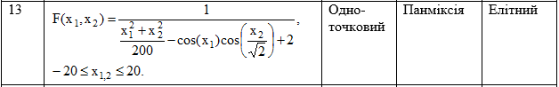

GENERIC ALGORITHM

Одноточковий кросовер працює наступним чином: спочатку випадково береться одна із length-1 точок розриву. Точка розриву (pivot) - ділянка між сусідніми бітами у строці. Обидві бітьківські структури розриваються на два сегменти по цій точці. Потім відповідні сегменти різних батьків склеюються і виходить два нових генотипу дітей.
Панміксія - обидва члени популяції, що створюють батьківську пару випадковим чином вибираються із усієї популяції, причому будь-який член популяції може стати учасником декількох пар.
При елітному доборі нова популяція складатиметься лише з найкращих членів репродукційної групи, яка поєднує батьків, нащадків і мутантів.